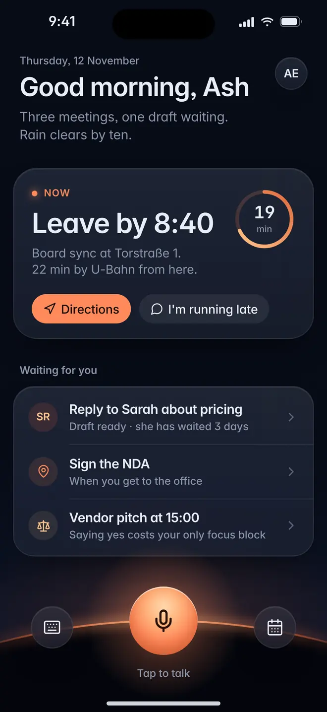
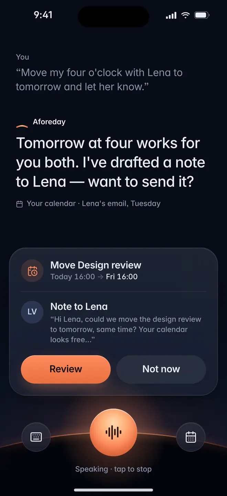
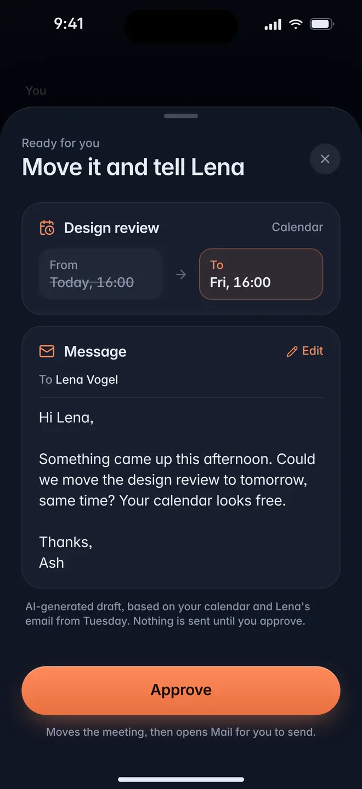
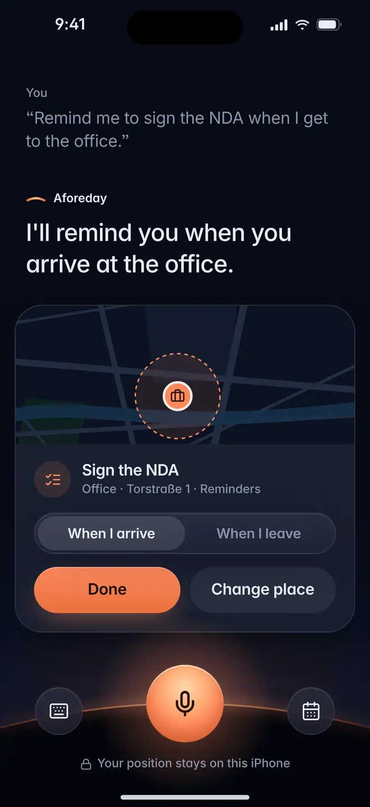

You talk. Text can wait.
Tap to talk. Typing is optional. The recording and the speech recognition stay on your iPhone, and the audio is not uploaded.
Voice first · iPhone
Aforeday is a voice-first daily assistant. You talk to it. Text is there when you want it. It works from the calendar and reminders on your iPhone, notices places, and prepares drafts for you to approve.
Pro Monthly and Pro Annual. No free trial. The price is shown in the app and on the App Store before you subscribe.


What it does
You talk. Aforeday keeps the day in view and waits when a decision is yours.
Tap to talk. Typing is optional. The recording and the speech recognition stay on your iPhone, and the audio is not uploaded.
Both come from your iPhone through Apple EventKit, from the calendars and lists you allow.
Location-aware reminders and suggestions: a nudge when you arrive or leave, and when it is time to go.
Dynamic Island and Live Activities keep something time-sensitive in view, such as when to leave or a focus session that is running.
Aforeday prepares a draft and stops there. You approve it. The screen says nothing is sent until you do.
A focus session for a block of time, and an evening close-out when the day is done. The share extension lets another app hand something to Aforeday.
In the app


Privacy
The backend and the AI run on Amazon Web Services in Frankfurt, eu-central-1. The microphone recording does not.
Servers and AI run in Frankfurt. AI uses Amazon Bedrock. A spoken reply’s text is sent to Amazon Polly there, to be turned into audio. Neither Polly nor we store that audio. If Polly fails, the iPhone speaks with its own voice.
Speech recognition stays on the iPhone. The audio itself is not uploaded. You sign in with Apple or with Google. Google is asked only for openid, email, and profile.
Location is used for place-based reminders and suggestions. The privacy policy says what we could confirm, and what still needs a check against the app.
Pricing
There is no free trial. Apple bills the subscription. We never see your card. The price is shown in the app and on the App Store before you subscribe.
Aforeday Pro
On the App Store
Sign in with Apple or Google, allow the calendars and reminders you want, and talk.